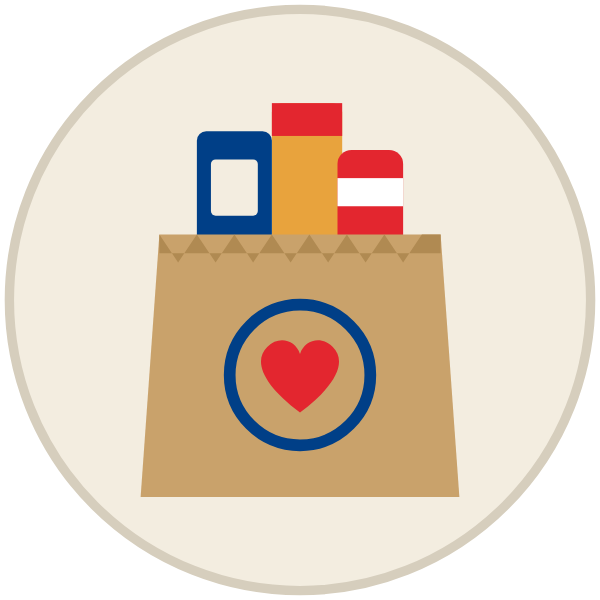
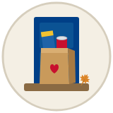
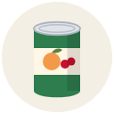
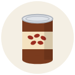
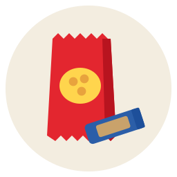

Set out a bagSaturday night or by 7 AM Sunday, rain or shine. Use a plastic bag.
Canned fruit & veggies
Beans, any kind
Shelf-stable milk
Lunchbox snacksSloppy joe sauce is on their list too, and any shelf-stable food helps. Unopened and in date, please. Nothing that needs a fridge or freezer, and no alcohol.
Rotterdam Community Center, 705 Curry Rd. Scouts will take it right from your car. Missed the pickup? Bring it here by 2 PM.